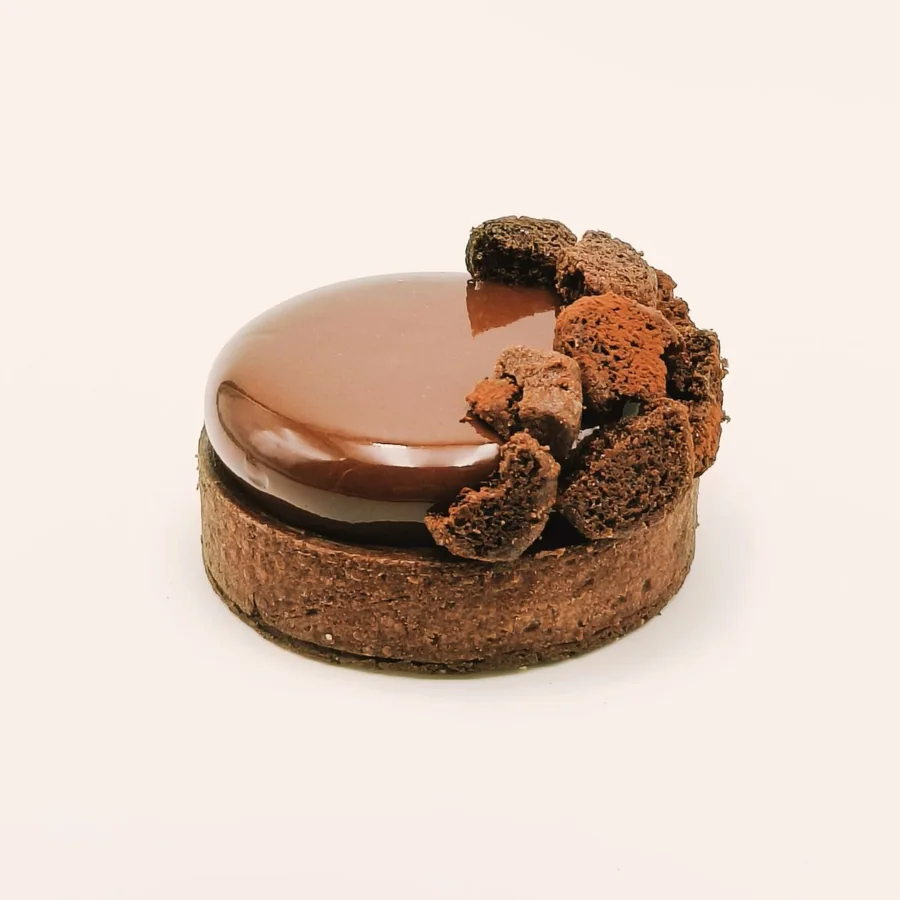
Chocolade
Chocoladebiscuit, gezouten karamel, chocolademousse en crumble.
€ 9,50In een herenhuis aan de Lange Kruisstraat werken Lies en Maurits elke tartelette af op het moment dat je bestelt. Met eetbare bloemetjes, verse kruiden en fruit, en een kopje koffie ernaast.
Woensdag tot zondag, van 12u tot 17u
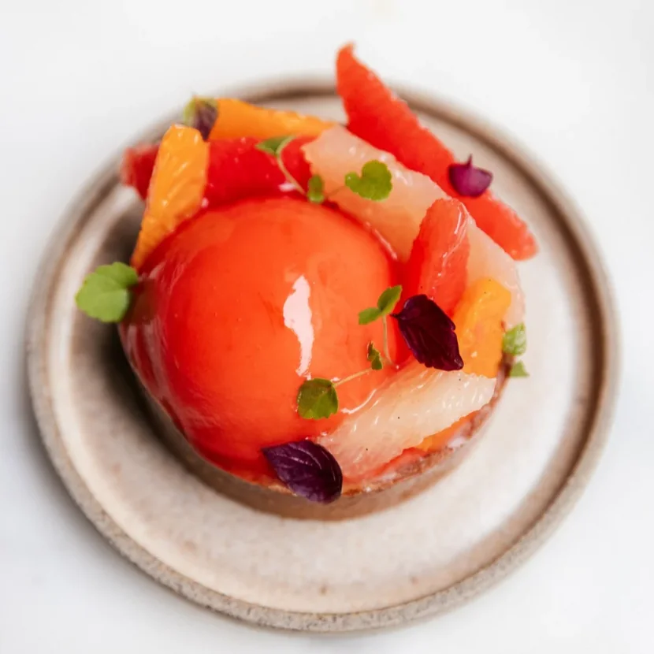
Een tartelette die uren in een vitrine staat, verliest zijn knapperigheid. Daarom maken we de laatste stap pas na je bestelling. Zo krijg je een krokante bodem, een zijdezachte crème en fruit dat net gesneden is.
Alles is huisbereid, ook het ijs. Room, melk en boter komen van de Gentse zuivelhoeve. De taartjes wisselen mee met de seizoenen.
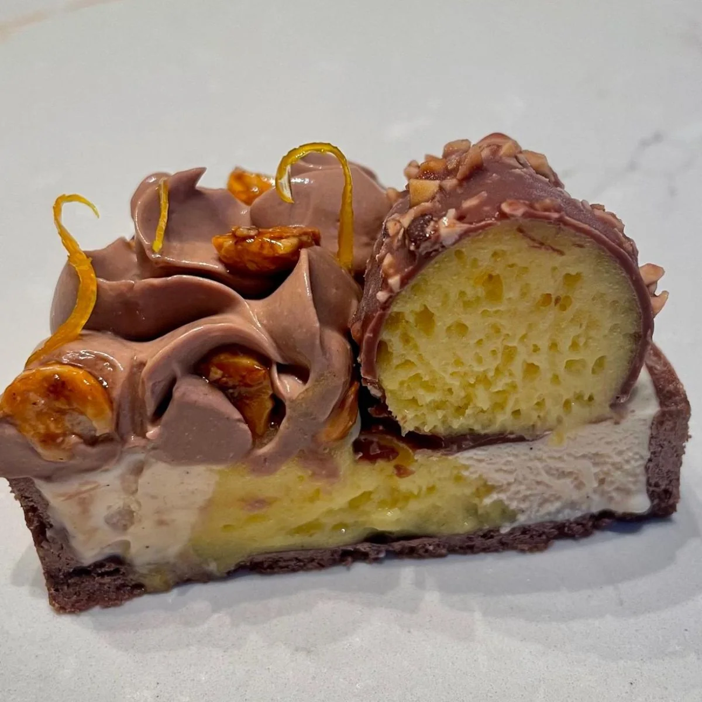
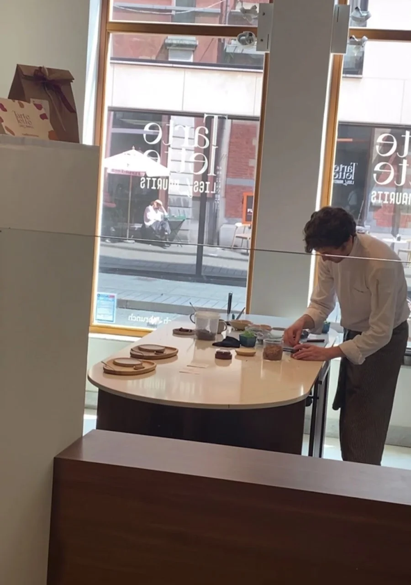
Elke dag vers, en op is op. Heb je je hart al verloren aan één taartje? Laat het weten bij je reservatie, dan houden we het voor je opzij.

Chocoladebiscuit, gezouten karamel, chocolademousse en crumble.
€ 9,50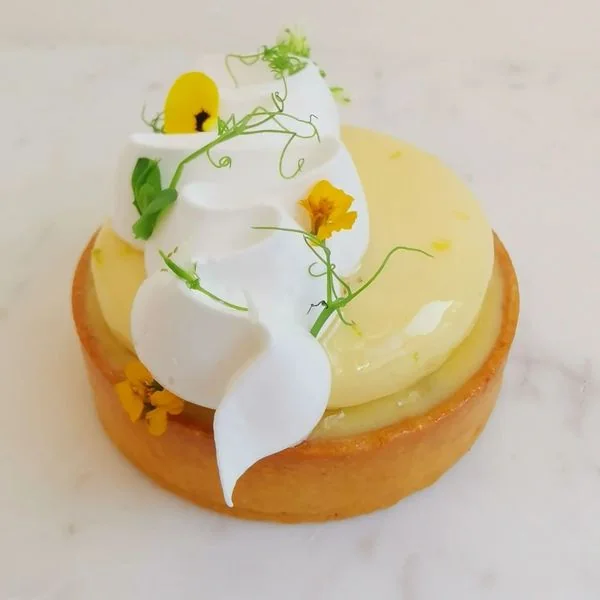
Hazelnootbiscuit, citroencompote, citroencremeux en meringue.
€ 9,50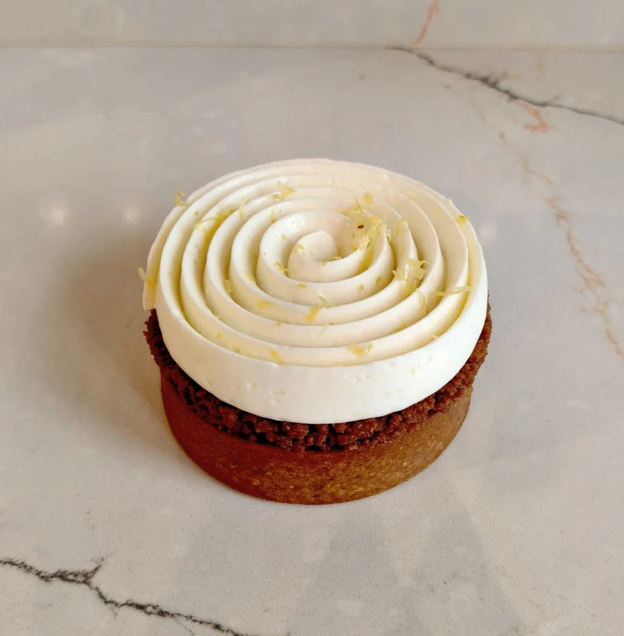
Romige cheesecake op een krokante bodem, afgewerkt met een spiraal van crème.
€ 9,50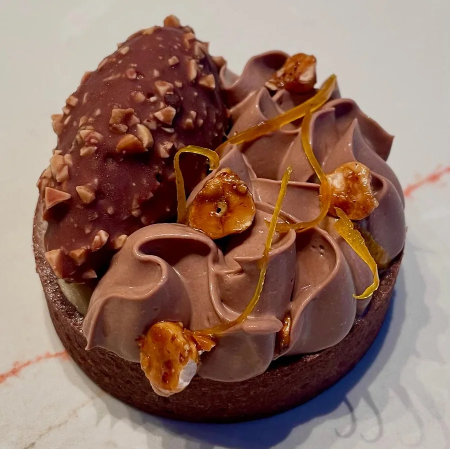
IJstaartje met hazelnootijs, sinaassorbet en gekarameliseerde hazelnootjes.
€ 9,50Voor de lunch maken we hartige tartelettes en quiches, met een frisse salade.
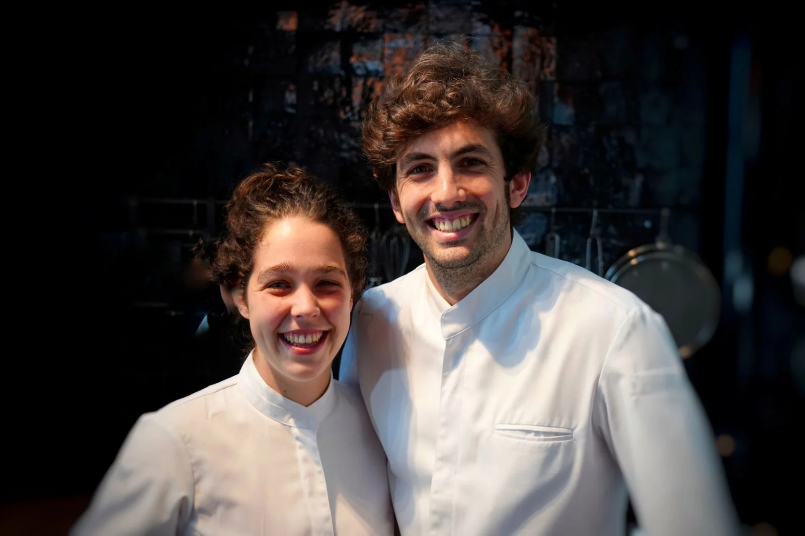
Twee patissiers die houden van lekker eten, van koken, van wandelen in de bergen en van elkaar. Samen bedachten we Tartelette: een plek waar we onze passie voor patisserie kwijt kunnen in culinaire taartjes, en waar jij gewoon mag genieten.
Lokaal, kwaliteit en passie. Daar draait het bij ons om.
Uit 392 reviews op Google. Dank je wel aan iedereen die bij ons aanschoof.
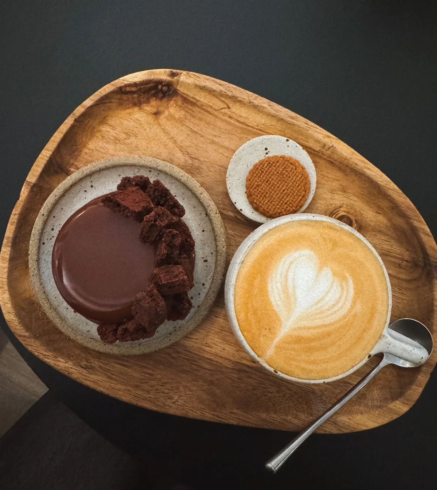
"Het interieur van het herenhuis is klassevol gerestaureerd en straalt rust en gezelligheid uit. En dan de taartjes… waw. Niet alleen echte kunstwerkjes om naar te kijken, maar ook ongelooflijk lekker."
"Zeer persoonlijke ontvangst, tartellets (zowel de hartige als zoete) zijn verrukkelijk !!! Worden steeds op het moment zelf met oog voor detail en kraakverse ingrediënten. Woorden zijn tekort."
"Ik had het geluk aan een tafeltje te zitten met direct zicht op het precisiewerk van de chef. Niet alleen de presentatie is een kunstwerkje op zich, maar de smaak is werkelijk verrassend lekker."
Bestel online en haal af in de winkel. Bestel je voor 10 uur, dan staat alles dezelfde dag voor je klaar.
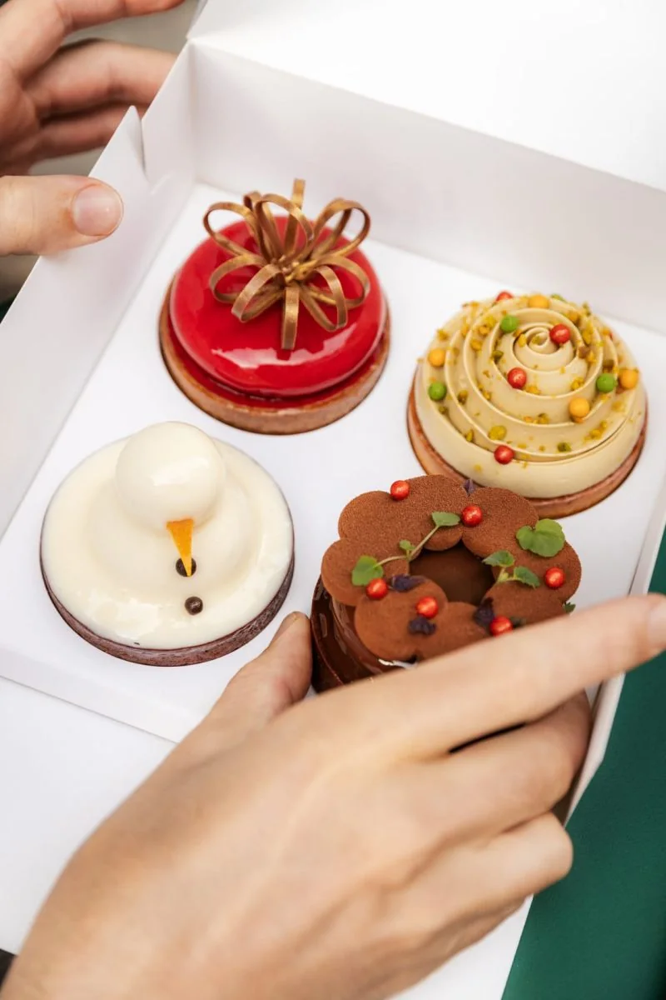
Vier feestelijke tartelettes in één doos, te bestellen voor de kerstvakantie.
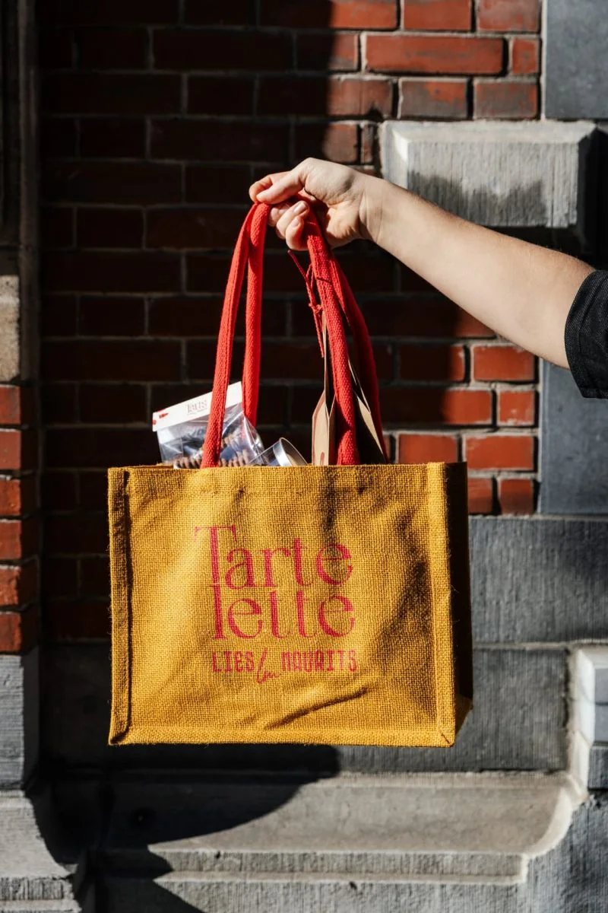
Neem je favoriete tartelettes mee voor een verjaardag of een etentje, of verras iemand met een cadeaubon.
Reserveren raden we aan, maar ook zonder reservatie ben je van harte welkom. Voor dezelfde dag reserveer je tot 11 uur.
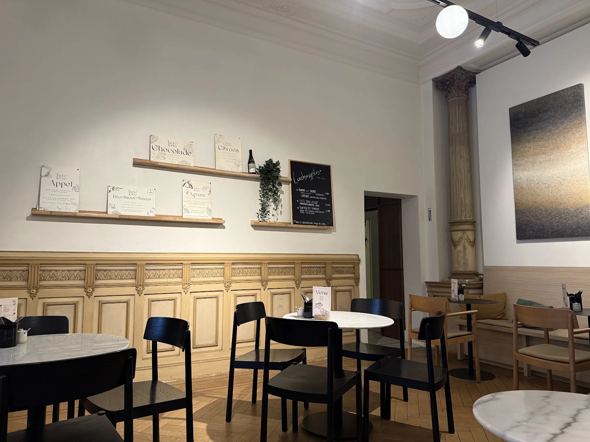
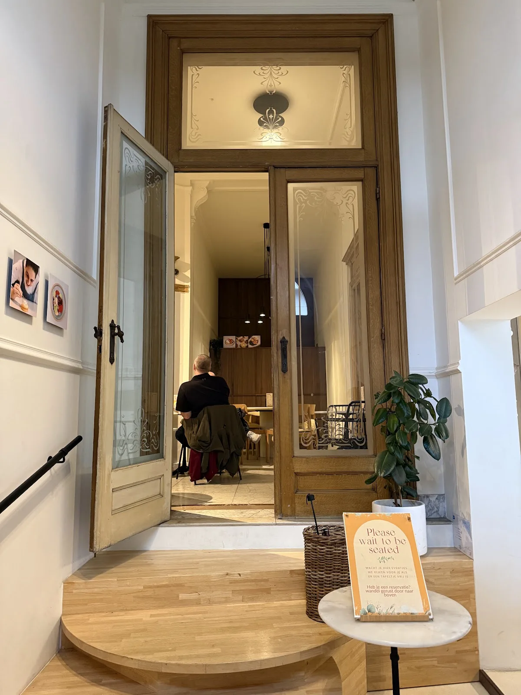
Ik maakte deze demo voor jullie om te tonen wat er kan. Na een kort gesprek maak ik er iets veel persoonlijkers van, helemaal naar jullie wens.
Vrijblijvend. Ik kom langs of we bellen.
Op maat, op jullie eigen domein.
Geen voorschot. Jullie betalen pas als alles klaar is.
Hosting, domeinnaam en kleine wijzigingen, zoals nieuwe openingsuren.
Omdat een voorbeeld meer zegt dan een mail. Zo zien jullie meteen wat er kan, en het kost jullie niets.
Nee. Het gesprek is vrijblijvend. Vinden jullie het niks, dan is het daarmee gedaan.
Na ons gesprek staat jullie site binnen 10 tot 14 dagen online.
Zeker. Jullie domeinnaam kan gewoon blijven, de nieuwe site komt in de plaats van de oude.
Nee, dat doe ik op basis van ons gesprek. Eigen foto's zijn mooi meegenomen, maar niet nodig om te starten.